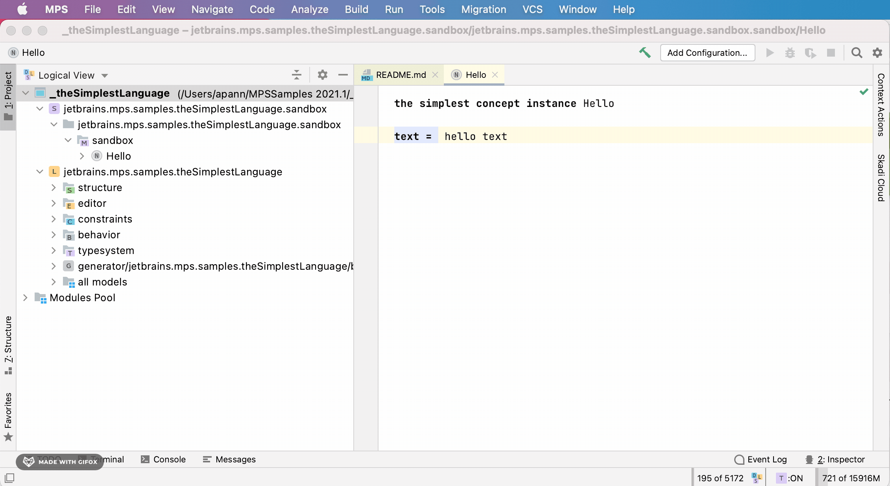
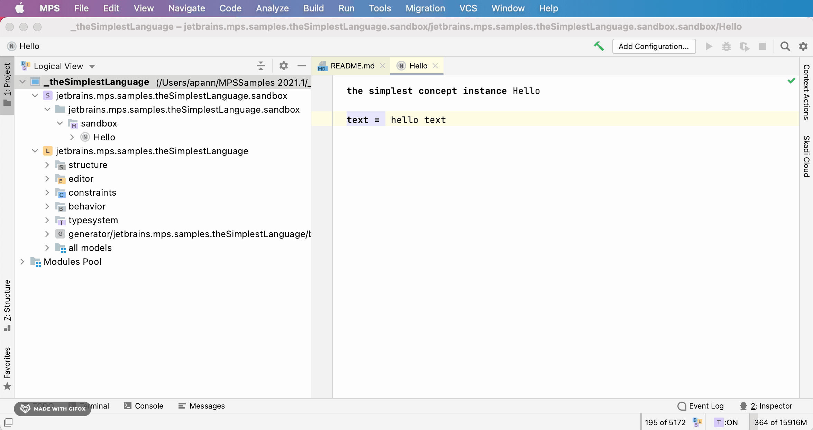
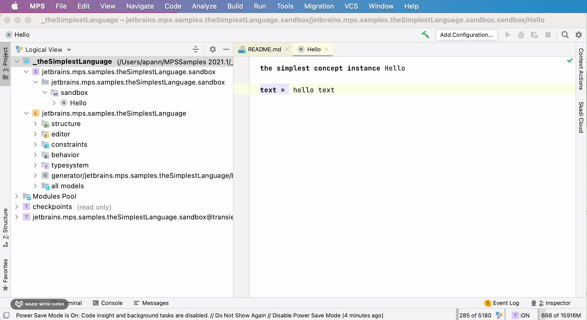
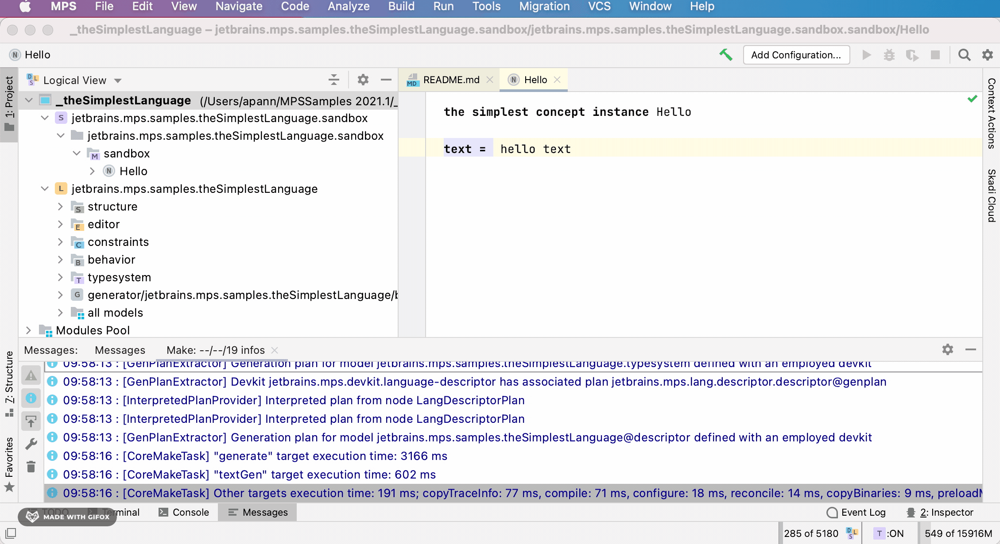

Who is MPS for?
Specific Languages’ blog: Who is MPS for?
I am a MPS beginner. Where do I start?
If you are new to MPS and want to learn more about MPS, start with the following links:
Is there a high level presentation that I can have a look at?
Yes, there is a presentation from 2020 by Václav Pech.
What are the most important shortcuts?
F1RE blog: JetBrains MPS Shortcuts
What can you do if a problem occurs that isn’t in this list?
Try invalidating the cache and restarting MPS (same menu). Search the forum and issue tracker. Ask a question on Slack.
{kind=link}
I changed something in a settings page and nothing changed.
There might be a bug related to caching. Reopening the dialog, invalidating the cache or restarting the project might help.
Which standard IDE settings should you change?
The maximum heap size setting should be changed to a higher values such as 8 GB when using many languages or plugins. Another reason for high memory usage can be many (poorly) implemented checking rules.
{kind=link}
I am running low on memory or the IDE is running slow. What can you do without restarting MPS?
When you have enabled the loaded models indicator in the lower right corner of the screen, you can click on the text to unload not needed models. The memory indicator at the same location can be used to free memory. As a last resort the power saving mode can be enabled which disables background tasks such as the model checker (not recommended).
{kind=link}
{kind=link}
What is a module, model, node, concept…?
- Specific Languages’ blog: Ambiguous terms: Modules and models
- log verbose’s blog: How MPS Identifies Things
Can you explain the MPS technology stack, project concepts, and OpenAPI relations?
DSLFoundry blog: MPS technology stack, project concepts, and OpenAPI relations explained visually
What’s a SRepository and how’s it structured?
The answer can be found in the MPS source code.Multiple repositories could be available in the feature. Given a repository, references to modules/models/nodes can be resolved. There’s no need in making ids unique globally as each subsystem knows, which exact repository it needs to use at any moment. (e.g. the type-system knows where it stores its type-nodes, so it will not try to resolve references to them )
A repository contains modules, modules have model roots, each model root can load models. Also a module can be a models container itself (without model root). A model is then a set of root nodes. Each root node is a root of a tree of nodes, So that overall, a repository is a tree structure.
Is there an existing expression/scripting language?
There is the expressions sample project. For a full language that can also be evaluated, have a look at KernelF available at IETS3.
How do you organize large projects in MPS?
Read the two answers in this thread.
How do you debug MPS projects?
Have a look at this blog post or this guide.
Where are the log messages?
log info logs to the MPS log file idea.log ,
,
message info logs to the messages view .
.
Which log level should you use?
Have a look at this Stack Overflow answer.
How to you export data from MPS?
- Specific Languages’ blog: The simplest way to export your data from MPS
- Specific Languages’ blog: Good and bad ways of exporting DSL models
- Specific Languages’ blog: Translation vs export
Why is a project read-only?
Specific Languages’ blog: Why is my project suddenly read-only?
How do you work with more than one project in MPS?
Given I want to work on a MPS project that uses other projects and I want to switch between tasks that sometimes need changes on both, in the dependent project and the root project. I would like to switch back and forth between using the default prepackaged project dependencies and my own repository of them where I build them myself. How could I do that?
Option 0: Open multiple projects in MPS at the same time
- Works when doing small changes
- fast
- unreliable: when changing dependencies in my source models, this leads to a reload operation on the repository, which sometimes messes up the loaded repository and caches
Option 1: Publish and pull from local maven ( IETS3)
- reliable
- example
- gradle script needs to be told to pull from local repository
– e.g. by providing
-PforceLocalDependenciesto IETS3 – or use dependency overrides
Option 3: Changing project libraries
- does not affect command line builds
Option 3a: Command line setup Task (
IETS3)
We usually have a ./gradlew setup task in our projects that replaces your .mps/libraries.xml. When you want to change the project, you’ll need to change the configuration of that command line setup task and rerun it.
Option 3b: MPS Path variables in settings (deprecated)
In the MPS setttings, you can configure path variables that can be used in .mps/libraries.xml to pinpoint to the location of a target project.
They will only configure the MPS behavior and not affect the command line builds. So in most cases, you don’t want to use them and instead let your build script setup these files.
contributed by: @abstraktor
Why is MPS shipped with JBR instead of using an installed JDK/JRE?
JBR is a fork of OpenJDK with specific bugfixes and improvements for JetBrains IDEs. More info can be found in JetBrains/JetBrainsRuntime. In some of the platform build scripts the environment ariable JB_JAVA11_HOME can be used to set the JDK home.
For older MPS versions that used Java 8, there was the environment variable JB_JAVA11_HOME.
Are there any resources/communities about domain-specific languages and MPS?
- DSL & MPS books by Markus Voelter
- Strumenta’s blog: The complete guide to (external) Domain Specific Languages
- Strumenta’s blog: 68 Resources To Help You To Create Programming Languages
- Strumenta Virtual Meetups